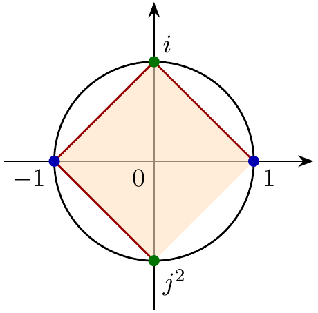

Chapitre 5 : Nombres complexes et géométrie
Maths expertes · Chapitre 5 — Nombres complexes et géométrie · cours de Frederik de Peyrelongue
Le plan est muni d'un repère orthonormé direct $(O,\vec{u},\vec{v})$, nommé plan complexe.
Remarque : un repère orthonormé $(O,\vec{u},\vec{v})$ est direct lorsque
I. Affixe d'un point et affixe d'un vecteur
Soit $M$ le point du plan de coordonnées $(x\,;y)$.
- On appelle affixe du point $M$ le nombre complexe $z$ défini par $z=x+iy$.
- On appelle affixe du vecteur $\overrightarrow{OM}$ le nombre complexe $z$.
- Un vecteur $\vec{w}$ a pour affixe $z$ lorsque $\vec{w}=\overrightarrow{OM}$, où $M$ est le point d'affixe $z$.
On note $M(z)$, $\overrightarrow{OM}(z)$, $\vec{w}(z)$.
Les points $I$, $J$ et $C$ ont pour affixes respectives $z_{I}=1$, $z_{J}=i$ et $z_{A}=-2+i$.
Soient $A$ et $B$ deux points d'affixe respective $z_{A}$ et $z_{B}$ dans le plan complexe.
La distance $AB$ est égale à
Soient $A$ et $B$ deux points d'affixe respective $z_{A}$ et $z_{B}$ dans le plan complexe.
- L'ensemble $(E)$ des points $M$ du plan d'affixe $z$ vérifiant $|z-z_{A}|=|z-z_{B}|$ est la médiatrice du segment $[AB]$.
- Si $r$ est un nombre réel strictement positif, alors l'ensemble $(E')$ des points $M$ du plan d'affixe $z$ vérifiant $|z-z_{A}|=r$ est le cercle de centre $A$ et de rayon $r$.
- $M\in(E)\iff |z-z_{A}|=|z-z_{B}|\iff AM=BM\iff M$ appartient à la médiatrice de $[AB]$.
- $M\in(E')\iff |z-z_{A}|=r\iff AM=r\iff M$ appartient au cercle de centre $A$ et de rayon $r$.
Soient $A$ et $B$ deux points d'affixe respective $z_{A}$ et $z_{B}$ dans le plan complexe.
L'affixe du vecteur $\overrightarrow{AB}$ est $z_{B}-z_{A}$.
$z_{A}=a+ib$ et $z_{B}=a'+ib'$.
Les coordonnées cartésiennes des points $A$ et $B$ sont $A(a,b)$ et $B(a',b')$, d'où $\overrightarrow{AB}\,(a'-a\,,\,b'-b)$.
Donc l'affixe de $\overrightarrow{AB}$ est
Soient $A$ et $B$ deux points d'affixe respective $z_{A}$ et $z_{B}$ dans le plan complexe : l'affixe du point $I$ milieu de $[AB]$ est
$z_{A}=a+ib$ et $z_{B}=a'+ib'$.
Les coordonnées cartésiennes des points $A$ et $B$ sont $A(a,b)$ et $B(a',b')$, d'où
d'où
Soient $A$, $B$ et $C$ trois points deux à deux distincts d'affixe respective $z_{A}$, $z_{B}$ et $z_{C}$.
- $\left(\vec{u}\,;\overrightarrow{AB}\right) =\argz(z_{B}-z_{A})+k\times 2\pi$ \ ($k\in\Z$) ;
- $\left(\overrightarrow{AB}\,;\overrightarrow{AC}\right) =\argz\left(\dfrac{z_{C}-z_{A}}{z_{B}-z_{A}}\right)+k\times 2\pi$ \ ($k\in\Z$).
$(z_{B}-z_{A})$. Soit $M$ le point d'affixe $z_{B}-z_{A}$.
Alors $\overrightarrow{OM}=\overrightarrow{AB}$, d'où
D'après la relation de Chasles,
Soient $A$, $B$ et $C$ trois points d'affixe respective $a=-1-i$, $b=3$ et $c=-2+3i$. Déterminer la nature du triangle $ABC$.
Méthode : on calcule le nombre complexe $\dfrac{b-a}{c-a}$, puis son module et son argument ;
- si le module est égal à $1$, on en déduit que $AB=AC$ ;
- si un argument de $\dfrac{b-c}{a-c}$ est $\pm\pi$, alors les points sont alignés ;
- si un argument est $\pm\dfrac{\pi}{2}$, alors les droites $(AB)$ et $(AC)$ sont perpendiculaires.
Solution :
Le triangle $ABC$ est isocèle rectangle en $A$.
II. Racines $n$-ièmes de l'unité
On appelle cercle unité, et on note $U$, l'ensemble des nombres complexes de module $1$. On a donc
Remarque : $z\in U$ signifie que le point $M(z)$ appartient au cercle trigonométrique
Pour tout $z\in U$ et pour tout $z'\in U$, alors $zz'\in U$ et $z/z'\in U$.
$U$ est un ensemble stable.
Pour $n\in\N^{*}$, on appelle racines $n$-ièmes de l'unité les solutions de l'équation complexe $z^{n}=1$.
On note $U_{n}$ l'ensemble des solutions de $z^{n}=1$.
$U_{n}$ est composé d'exactement $n$ éléments.
Si $n\geqslant 3$, alors les points dont les affixes sont les racines $n$-ièmes de l'unité forment un polygone régulier à $n$ côtés.

et